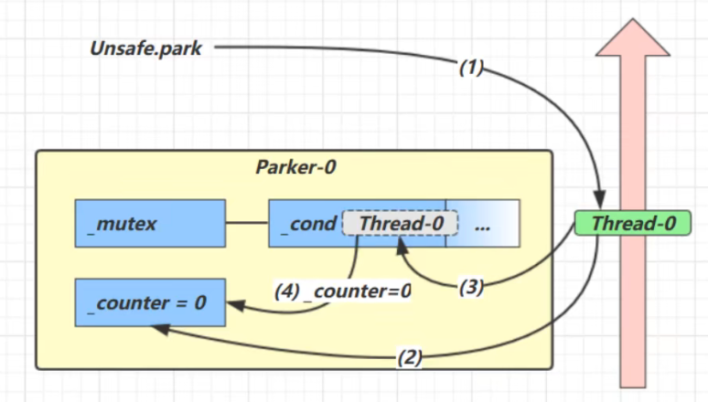
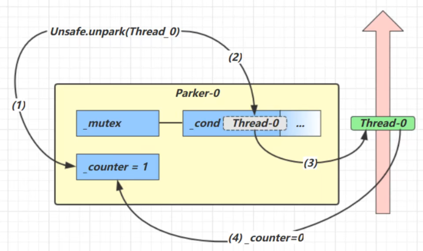
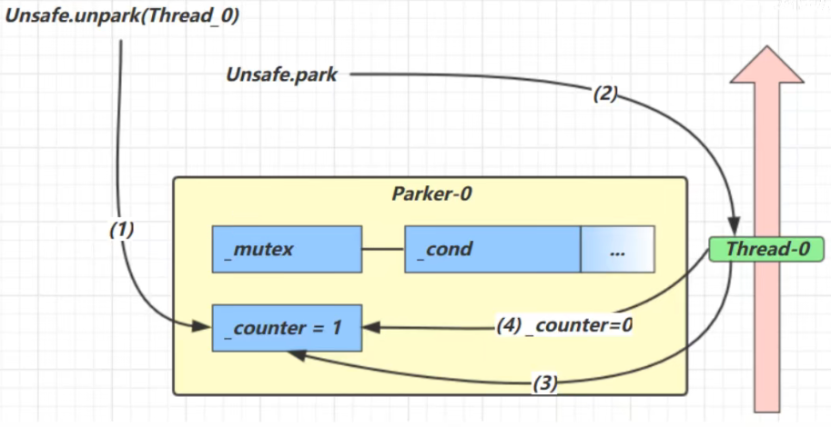

JUC-park+线程状态转换+活跃性
3. 管理共享变量以及对共享变量的操作过程
3.10 park & unpark
它们都是LockSupport类中的方法。
基本使用：
1 | //暂停当前线程 |
1 | public static void main(String[] args) throws InterruptedException { |
3.10.1 与wait & notify的区别：
- wait & notify必须配合Object Monitor锁使用，park & unpark不需要。
- park & unpark以线程为单位来阻塞和唤醒线程，notify只能随机唤醒一个等待线程，notifyAll唤醒所有等待线程，就不那么精确。
- park & unpark可以先unpark，wait & notify不能先notify。
3.10.2 原理
每个线程都有自己的一个Parker对象，这个对象由三个部分组成：_counter, _cond, _mutex。
把线程比作一个旅行者，Parker是他随身带的背包。_cond是背包中的帐篷，_counter是食物（0代表没有食物，1代表有食物）。
- 调用park()时
如果counter=1（有食物）则不需要暂停，继续前进。
如果counter=0（没有食物），那么进入cond（帐篷）中休息。

- 调用unpark()时
如果线程在cond中阻塞（在帐篷中休息），那么唤醒它，并且counter置为1（补充食物），继续运行，运行后counter置为0（吃掉食物）。

如果线程还在运行，那么将counter置为1（提前备好食物），下次调用park()时，仅消耗掉备好的食物，不用停下休息。

多次调用unpark()只会补充一次食物，即counter最多为1。
3.11 线程状态转换
假设有线程Thread t。
- NEW –> RUNNABLE
调用t.start()，由NEW转换至RUNNABLE。
- RUNNABLE <–> WAITING
t线程用synchronized(obj)获取对象锁后：
- 调用
obj.wait()，由RUNNABLE转换至WAITING。 - 调用
obj.notify()/obj.notifyAll()/t.interrupt，且竞争锁成功，由WAITING转换至RUNNABLE。 - 调用
obj.notify()/obj.notifyAll()/t.interrupt，但竞争锁失败，由WAITING转换至BLOCKED。
- RUNNABLE <–> WAITING
- 当前线程调用了
t.join()，当前线程从RUNNABLE转换至WAITING。（比如主线程要等待t线程运行结束，那么是在主线程里调用t.join()） - t线程运行结束后，或者调用了当前线程中的
interrupt()，当前线程从WAITING转换至RUNNABLE。
- RUNNABLE <–> WAITING
- 当前线程调用
LockSupport.park()，当前线程从RUNNABLE转换至WAITING。 - 调用
LockSupport.unpark(目标线程)或调用了线程的interrupt()，会让目标线程从WAITING转换至RUNNABLE。
- RUNNABLE <–> TIMED_WAITING
t线程用synchronized(obj)获取对象锁后：
- 调用
obj.wait(long n)，由RUNNABLE转换至TIMED_WAITING。 - 线程t等待时间超过n毫秒，或调用
obj.notify()/obj.notifyAll()/t.interrupt，且竞争锁成功，由TIMED_WAITING转换至RUNNABLE。 - 线程t等待时间超过n毫秒，或调用
obj.notify()/obj.notifyAll()/t.interrupt，但竞争锁失败，由TIMED_WAITING转换至BLOCKED。
- RUNNABLE <–> TIMED_WAITING
- 当前线程调用了
t.join(long n)，当前线程从RUNNABLE转换至TIMED_WAITING。 - 当前线程等待时间超过n毫秒，或t线程运行结束后，或者调用了当前线程中的
interrupt()，当前线程从TIMED_WAITING转换至RUNNABLE。
- RUNNABLE <–> TIMED_WAITING
- 当前线程调用
Thread.sleep(long n)，当前线程从RUNNABLE转换至TIMED_WAITING。 - 当前线程等待时间超过n毫秒，当前线程从TIMED_WAITING转换至RUNNABLE。
- RUNNABLE <–> TIMED_WAITING
- 当前线程调用
LockSupport.parkNanos(long nanos)或LockSupport.parkUntil(Long millis)时，当前线程从RUNNABLE转换至TIMED_WAITING。 - 调用
LockSupport.unpark(目标线程)或调用了线程的interrupt()，或等待超时，会让目标线程从TIMED_WAITING转换至RUNNABLE。
- RUNNABLE <–> BLOCKED
- t线程尝试用
synchronized(obj)获取对象锁竞争失败时，从RUNNABLE转换至BLOCKED。 - 持obj锁线程的同步代码块执行完毕，会唤醒该对象上所有BLOCKED的线程重新竞争，竞争成功的线程从BLOCKED转换至RUNNABLE。
- RUNNABLE –> TERMINATED
当前线程所有代码运行完毕，进入TERMINATED。
3.12 活跃性
3.12.1 死锁
当一个线程需要同时获取多把锁，就容易发生死锁。
死锁的四个必要条件：
- 互斥条件：一个资源每次只能被一个进程使用。
- 请求与保持条件：一个进程因请求资源而阻塞时，对已获得的资源保持不放。
- 不可剥夺条件：进程已获得的资源，在末使用完之前，不能强行剥夺。
- 循环等待条件：若干进程之间形成一种头尾相接的循环等待资源关系。
1 | Object A = new Object(); |
3.12.2 活锁
活锁指的是任务或者执行者没有被阻塞，由于某些条件没有满足，导致一直重复尝试，失败。活锁出现在两个线程互相改变对方的结束条件，最后谁也无法结束的场景下。
1 | static volatile int count = 10; |
可以使不同线程的睡眠时间随机，让它们的指令交错开，来解决活锁问题。
3.12.3 饥饿
对于死锁，可以使用顺序加锁的方式来预防死锁的发生。以3.12.1中的代码为例：
如果规定，大家都要先获取A锁，再获取B锁，那么线程t2在尝试获取A锁的时候，就会因为t1已经获取A锁而被阻塞。这时t1就能顺利获得B锁，从而避免死锁。
但是这种顺序加锁又会导致饥饿这种问题，即虽然没有死锁，但是某些线程拿到锁的机会太少了，被其他线程抢去了，导致它得不到执行。